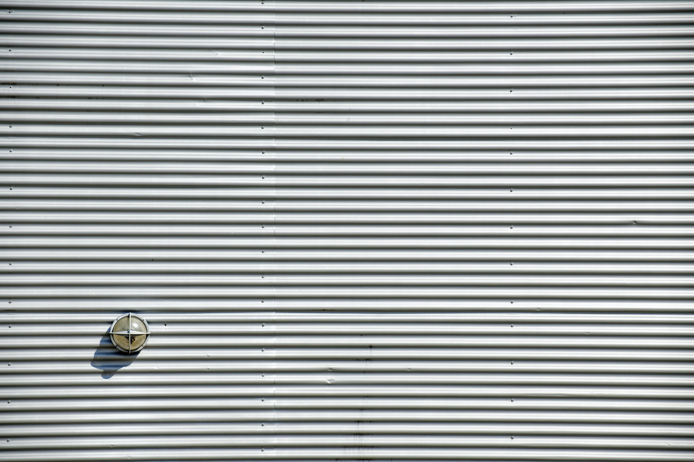
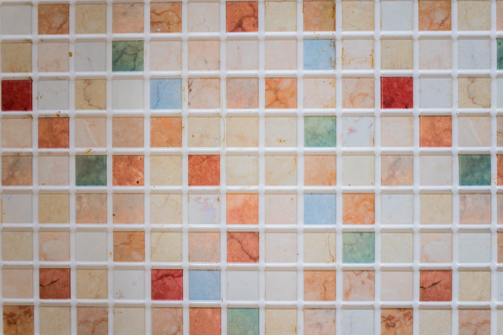
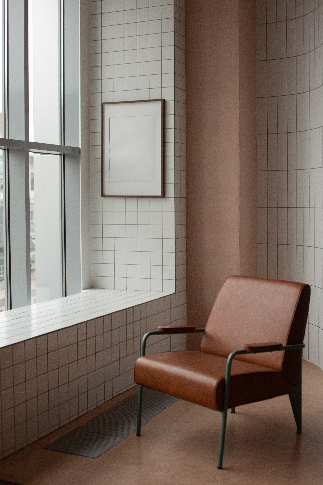

Технология облицовки
поверхностей
Электронный обучающий курс
О курсе
Электронный учебный курс предназначен для изучения технологии облицовочных работ при подготовке квалифицированных
рабочих по квалификации "Облицовщик-плиточник".
Современное строительство при проведении облицовочных работ применяет индустриальные методы,
но достаточно большое число работ выполняют с помощью ручного труда, что влияет на конечную стоимость.
Качество выполнения работ зависит не только от применяемых материалов и изделий, но и от знаний и умений
специалиста-отделочника, его квалификации. Специалист должен знать технологическую последовательность выполнения работ,
необходимость применения определённых клеёв и мастик для крепления различных материалов, нужную толщину клеящей прослойки,
соблюдать необходимые технологические перерывы для высокого качества работ.
Интересные факты

Вход
Лазерная обработка
Лазеры используются для точной обработки поверхностей, создания текстур, нанесения рисунков или маркировки материалов. Эта технология обеспечивает высокую точность и повышенную эффективность процесса облицовки.
Плазменное напыление
Плазменное напыление — это метод облицовки, при котором материал в виде порошка распыляется в плазменном пламени и наносится на поверхность. Этот процесс позволяет создавать тонкие и стойкие покрытия на различных материалах.
Подводная облицовка
Технология подводной облицовки используется для защиты подводных конструкций, таких как нефтяные платформы или морские трубопроводы, от коррозии. Этот процесс позволяет наносить защитные покрытия под водой, обеспечивая долговечность и надежность сооружений.
Измельчение материалов
Современные технологии облицовки поверхностей включают использование специализированных методов измельчения материалов для создания уникальных текстур и отделочных эффектов. Например, мельчайшие частицы керамики или стекла могут быть интегрированы в покрытия, придавая им особую текстуру или светоотражающие свойства. Этот процесс позволяет достичь высокой декоративности и функциональности поверхностей.
Термообработка
Термообработка поверхностей применяется для изменения структуры материала и улучшения его механических свойств. Этот процесс может включать нагревание, охлаждение или нанесение тепловых покрытий, что делает материал более прочным, твердым или стойким к износу.